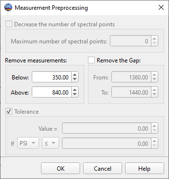

Measurement Preprocessing

This option allows you to decrease the number of measurement points, thus speeding up the characterization procedure. A special interpolation method is employed to preserve the most significant information contained in the measurement data. You need to specify the Maximum Number of Spectral Points and activate this option.
- Remove Measurements Edit Fields enable you to set the minimum
and maximum values for the wavelength range that will be retained in the measurement data file after preprocessing.
- The Remove a Gap Edit Fields allow you to exclude certain
intervals from the measurements. By default, the water absorption region is specified, but you can adjust these values as necessary. If you need to exclude several gaps, apply Measurement Preprocessing multiple times to the loaded data.
- The Set Tolerance option allows you to adjust measurement
tolerances based on the selected criterion. This can be useful in situations where the accuracy of measurements is known to be low at low (or high) levels of the measured characteristic.
- Normalization of measurement data is possible for measurements
related to the uncoated substrate. This normalization is performed with respect to the currently loaded substrate. The procedure involves multiplying the measurement data by the Fresnel transmission/reflection coefficient of the uncoated substrate. In the case of transmittance data, both sides of the substrate are considered. The role of the substrate back side is determined by the current settings in the Reflectance without Back Side and Transmittance without Back Side options in the Characterization Options dialog of the Characterization submenu.